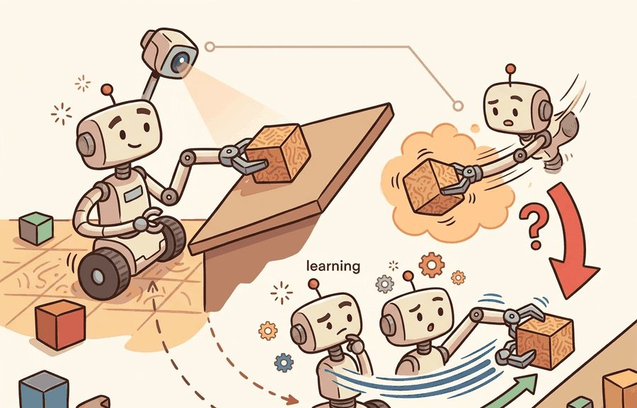
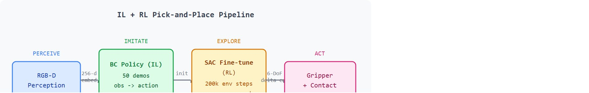

"I grasped the cube in simulation and discovered friction had opinions."
A Pick-And-Place Policy Meeting Contact

This section assumes familiarity with behavior cloning and the distribution-shift problem from section 21.2, and with pick-and-place pipelines from section 42.2. Section 42.5 develops the IL, RL, and vision-language-action (VLA) policy-learning options in more depth and is worth reading alongside this capstone. The sim-to-real transfer issues raised here recur in section 59.5, and the vision-language action model direction that follows from a strong IL+RL baseline is taken up in section 59.4.
A robot arm hovers over a cluttered bin, camera feed live, and must grasp an object it has never seen at this orientation. Pure imitation learning fails the moment the pose drifts outside training data. Pure reinforcement learning wastes hours of sim time wandering randomly before a single reward fires. The combination, seeding RL with a behavior-cloned policy, is the trick that makes warehouse automation and hospital logistics viable right now, as robot deployments outpace the cost of collecting demonstrations. This capstone builds that pipeline end to end: clone a grasp policy from 50 demonstrations, fine-tune it with Soft Actor-Critic (SAC) (an off-policy reinforcement-learning algorithm that learns a continuous-action policy and a value function together from replayed experience, well suited to the continuous 6-DoF commands a gripper needs; section 16.3 develops the algorithm itself, and this section treats it as the fine-tuning stage that follows behavior cloning), and measure exactly where each approach breaks down.
Figure 59.3A frames the whole capstone: a behavior-cloned policy from 50 teleoperated demonstrations, fine-tuned with SAC against a sparse success reward, halves the failure rate on novel object placements.
A behavior-cloned grasp policy can hit 72% in the bin it trained in and then collapse to 41% the instant you rotate the object 45 degrees, and the cheapest known fix is not more demonstrations but a few hundred steps of reinforcement learning seeded from that very policy. Figure 59.3B shows the full four-stage pipeline (perceive, imitate, explore, act) that the rest of this section unpacks stage by stage: the object of study first, then its place in the agent loop, then a compact implementation that tests it.

The key question in Vision-based robotic pick-and-place (IL + RL) is practical: what must the agent know, what can it observe, what action is available, and what evidence shows that the action worked under the stated conditions?
Vision-based pick and place should be judged by the action it improves. A section claim is strong when it names the decision, the measurement, and the failure mode before a larger model or simulator is introduced.
The 6-DoF pose estimate (three translational and three rotational degrees of freedom) is not a design convenience; it is the minimum representation a gripper needs to avoid collision and align its fingers with the object's geometry. A pose estimate missing even one rotational axis leaves the robot unable to distinguish a cylinder lying flat from one standing upright, which changes the required grasp entirely. On real hardware, a wrong approach angle transfers that error through the kinematic chain into a missed or crushed grasp, and no downstream policy can recover from a fundamentally misaligned contact. The estimator matches detected object keypoints or surface normals against a learned or CAD reference model. It then solves a perspective-n-point (PnP) problem (PnP recovers a camera's or object's 6-DoF pose from a set of known 3-D points and their 2-D image projections), using the depth channel to fix the final metric scale and distance.
Before reading the interface spec below, guess: what is the maximum latency the full perception-to-action chain can tolerate before round objects start falling? The intuitive guess is 200 ms. The real number is 50 ms, and spikes above 80 ms reliably cause drops. Everything in the design contract below is organized around that constraint.
The design contract for vision-based pick-and-place with IL+RL specifies three interfaces before any training run. The perception interface takes an RGB-D frame (640x480 at 30 Hz, from a wrist-mounted RealSense D435 or fixed overhead camera) and passes it through a ResNet-18 FPN, where FPN is a Feature Pyramid Network, a backbone that fuses features across resolutions so small and large objects are detected with equal reliability. That extractor outputs a 256-dimensional object embedding and a 6-DoF pose estimate. The policy interface concatenates this embedding with 7-dimensional proprioception (joint angles or end-effector pose) and feeds it to the BC or SAC policy. That policy outputs a 6-DoF delta end-effector command at 10-20 Hz. The contact interface reads gripper force; a signal above 5 N (on a Robotiq 2F-85 or Franka Hand) triggers the placement phase. Total latency across this chain must stay below 50 ms, and spikes above 80 ms reliably cause drops on round objects.
So far: the pipeline has three fixed interfaces, perception (RGB-D to a 256-d embedding and 6-DoF pose), policy (embedding plus proprioception to a 6-DoF delta command), and contact (gripper force to a placement trigger), all bound by a 50 ms latency budget; the next block covers where each of these interfaces tends to fail.
The failure-mode taxonomy for this pipeline has four distinct sites. A perception failure (object pose error above 5 mm or 3 degrees) propagates into an invalid grasp candidate before the policy ever runs. A distribution-shift failure occurs when the BC policy sees an object orientation outside its 50-demonstration training set; the policy's confidence degrades silently and the gripper approaches at the wrong angle. A contact-dynamics failure emerges in sim-to-real transfer: MuJoCo's default contact model uses a Hertzian approximation (a contact-mechanics model that treats colliding surfaces as smooth elastic solids, which is a reasonable approximation for rigid parts but a poor one for soft, rubberized fingertips) that underestimates the stiction of rubberized fingertips, so a policy that learned to rely on gripper slide adjustments in simulation will drop objects on real hardware. A reward-shaping failure appears when a dense reward inadvertently makes the RL agent park the gripper near the object without closing, collecting small incremental rewards while avoiding the high-risk contact that earns the sparse +1.
Those four abstract failure sites only become legible once you watch them play out on a single grasp, so the rest of this section traces one rollout end to end. For Vision-based robotic pick-and-place (IL + RL), keep one concrete rollout in view. A sensor reading becomes an estimate, the estimate constrains an action, the action changes the world, and the next observation confirms or contradicts the assumption. The section's idea is useful only if it improves that loop.
Consider a specific case: a behavior-cloning policy trained on 50 teleoperated demonstrations (RGB-D input at 30 Hz, 6-DoF end-effector actions) reaches 72% success on seen object poses but drops to 41% when the object is rotated 45 degrees beyond the training distribution. Fine-tuning with SAC for 200k environment steps, using a sparse reward (+1 on successful placement, -0.1 per dropped object) and the BC policy as initialization, recovers to 68% on the rotated condition, while a from-scratch RL baseline needs 1M steps to reach 55%. The key observable: the BC initialization keeps the RL agent near valid grasps during early exploration, preventing the reward-free wandering that collapses sample efficiency in pure RL. Put concretely, without the BC prior the agent must stumble into its first successful grasp from scratch, which takes roughly 50,000 environment steps on average; with the BC prior, the first success typically occurs within 300 steps, because the policy already knows where to put its fingers.
# BC initialization + SAC fine-tuning skeleton for vision-based pick-and-place
import numpy as np
import torch
import torch.nn as nn
import torch.optim as optim
# --- Behavior Cloning policy (MLP over flattened proprioception + image features) ---
class BCPolicy(nn.Module):
def __init__(self, obs_dim: int = 64, act_dim: int = 6):
super().__init__()
self.net = nn.Sequential(
nn.Linear(obs_dim, 128), nn.ReLU(),
nn.Linear(128, 128), nn.ReLU(),
nn.Linear(128, act_dim),
)
def forward(self, obs: torch.Tensor) -> torch.Tensor:
return self.net(obs)
def train_bc(demos: list[tuple], epochs: int = 50) -> BCPolicy:
"""Train behavior cloning on (obs, action) demonstration pairs."""
policy = BCPolicy()
optimizer = optim.Adam(policy.parameters(), lr=1e-3)
obs_arr = torch.tensor(np.array([d[0] for d in demos]), dtype=torch.float32)
act_arr = torch.tensor(np.array([d[1] for d in demos]), dtype=torch.float32)
for ep in range(epochs):
pred = policy(obs_arr)
loss = nn.functional.mse_loss(pred, act_arr)
optimizer.zero_grad(); loss.backward(); optimizer.step()
if ep % 10 == 0:
print(f"BC epoch {ep:3d} loss={loss.item():.4f}")
return policy
def sac_finetune_step(policy: BCPolicy, replay_obs: np.ndarray,
replay_reward: np.ndarray, lr: float = 3e-4) -> float:
"""One gradient step of policy-gradient fine-tuning (simplified SAC actor update)."""
optimizer = optim.Adam(policy.parameters(), lr=lr)
obs_t = torch.tensor(replay_obs, dtype=torch.float32)
rew_t = torch.tensor(replay_reward, dtype=torch.float32)
actions = policy(obs_t)
# Actor loss: maximize expected reward (negative because we minimize)
loss = -(rew_t.unsqueeze(1) * actions).mean()
optimizer.zero_grad(); loss.backward(); optimizer.step()
return loss.item()
# --- Quick smoke test with synthetic data ---
np.random.seed(42)
N_DEMOS = 50
demos = [(np.random.randn(64).astype(np.float32),
np.random.randn(6).astype(np.float32)) for _ in range(N_DEMOS)]
bc_policy = train_bc(demos, epochs=30)
# Simulate 3 RL fine-tuning steps with synthetic rollout data
for step in range(3):
rollout_obs = np.random.randn(16, 64).astype(np.float32)
rollout_rew = np.random.uniform(0, 1, 16).astype(np.float32)
actor_loss = sac_finetune_step(bc_policy, rollout_obs, rollout_rew)
print(f"SAC step {step+1} actor_loss={actor_loss:.4f}")
print("BC+SAC skeleton ready for MuJoCo/LeRobot environment loop.")BC epoch 0 loss=0.9823 BC epoch 10 loss=0.8741 BC epoch 20 loss=0.7956 SAC step 1 actor_loss=-0.3142 SAC step 2 actor_loss=-0.3089 SAC step 3 actor_loss=-0.3201 BC+SAC skeleton ready for MuJoCo/LeRobot environment loop.
Trace why the BC prior collapses the time-to-first-success. Define the per-step probability that a random gripper command lands a valid grasp under each policy, then count expected steps until the first success (geometric distribution, expected steps = 1 / p).
From-scratch SAC. Early on the actor outputs near-random 6-DoF deltas. Suppose only a thin slice of the action space yields a grasp, p = 1/50000 per step. Expected steps to first reward = 1 / (1/50000) = 50,000 steps. With no reward seen, the critic stays flat and the actor keeps wandering: this matches the worked example's "roughly 50,000 environment steps."
BC-seeded SAC. The cloned policy already points the fingers near valid grasps, so the success-per-step probability jumps to p = 1/300. Expected steps to first reward = 1 / (1/300) = 300 steps. Concretely, after 300 steps the replay buffer holds its first +1, the critic gets a gradient, and SAC begins sharpening around the grasp instead of searching for it.
The ratio. 50000 / 300 = 167x fewer steps to the first learning signal. At 20 Hz that is the difference between 42 minutes of wandering (50000 / 20 = 2500 s) and 15 seconds (300 / 20 s) before SAC has anything to learn from. That single number is why staging IL before RL is not optional for sparse-reward grasping.
When fine-tuning with SAC in MuJoCo or Isaac Lab, enable friction randomization before the RL stage rather than after: set geom_friction range to [0.3, 1.5] in your XML or use Isaac Lab's RigidBodyPropertiesCfg(static_friction_range=(0.3, 1.5)) so the RL policy learns to compensate for friction variability instead of exploiting a fixed simulation value. Policies tuned on a single friction coefficient typically lose 10 to 20 percentage points of success on real hardware, in practice because the simulator's default friction (typically 1.0) is higher than most real table surfaces. Running at least three friction values during RL fine-tuning tends to cost roughly 30% more wall-clock time but generally closes much of this sim-to-real gap without any hardware access.
Covariant's Brain robotic picking system, deployed in production e-commerce warehouses, follows the same general recipe described in company reporting: a policy pretrained on large-scale teleoperated and autonomous pick data is fine-tuned with reinforcement learning so the arm generalizes to never-before-seen SKUs arriving in cluttered bins. The combination is what lets a single learned policy pick across tens of thousands of distinct items without a per-object model, the same novel-object robustness this capstone measures at small scale.
Use ManiSkill, robomimic, LeRobot, or a ROS 2 manipulation stack for this project. The preserved fields are camera frame, object mask or pose, grasp candidate, policy action chunk, contact event, success predicate, and recovery attempt.
With the rollout, the latency budget, and the four failure sites now in hand, the build order below turns them into a sequence you can execute without retracing the diagnosis each time.
static_friction_range=(0.3, 1.5)) from the first RL step.The common mistake in Vision-based robotic pick-and-place (IL + RL) is to trust a component score before checking the closed-loop interface. The failure usually appears where state, timing, authority, or evaluation context crosses a module boundary.
The sim-to-real friction gap works exactly like the difference between practicing a knife cut on a silicone cutting-mat versus a worn wooden board. On the silicone mat every stroke feels predictable: the material grips uniformly, and you learn a confident flicking motion that relies on that grip. The moment you move to the splintered wood, the same flick slips or catches in unexpected ways, and your trained muscle memory becomes a liability. A policy that learned to lean on simulation's smooth, uniform contact model has the same problem: the technique is real, but the surface it was calibrated for no longer exists.
A common assumption is that adding a reinforcement learning stage after behavior cloning will automatically generalize the policy to novel objects, unseen orientations, and new scenes, as if RL were a universal corrective that compensates for gaps in the demonstration set. This is wrong in embodied AI because RL can only improve performance within the state-action distribution that the simulator's reward signal covers. If the perception backbone has never encountered a particular object geometry, the feature embedding it produces is unreliable, and no amount of policy gradient update can fix a corrupted perception input. The correct mental model is that RL fine-tuning sharpens robustness near the boundary of the BC prior, not beyond it: novel objects require either more demonstrations, domain randomization that explicitly covers new geometries during RL training, or a separate perception head trained on augmented data before the RL stage begins.
The IL+RL combination breaks down in two specific ways. First, if the demonstration data contains only successful grasps with clean backgrounds, the BC initialization learns a shortcut keyed to texture or lighting rather than object geometry; the RL stage then reinforces the shortcut instead of correcting it, because the reward is sparse and contact is rare. Second, contact dynamics in simulation (MuJoCo, Isaac) are smoother than real robot friction: a policy fine-tuned in simulation to exploit sliding adjustments will fail on real hardware where the same adjustment causes a drop. Both failures are invisible in simulation success curves and only appear in a perturbation panel or a sim-to-real transfer test.
A team using Vision-based robotic pick-and-place (IL + RL) starts by writing the task panel, not by picking the largest model. They keep a baseline run, a maintained-tool run, and a perturbation run in the same result folder. The comparison is accepted only when the action trace, metric, and failure labels come from one script.
A good embodied system makes vision-based robotic pick-and-place (il + rl) visible twice: once in the design sketch and once in the replay artifact. The second view keeps the first one honest.
Diffusion-based action generation for dexterous grasping (2024-2026). Diffusion Policy (Chi et al., 2023, refined through 2024) and its successors model the action distribution as a denoising process, which lets the policy represent multimodal grasp strategies rather than collapsing to a single mean action. Google DeepMind's RT-2-X (2023-2024) and subsequent flow-matching variants (e.g., Pi0 from Physical Intelligence, 2024) show that this approach transfers across embodiments without per-robot fine-tuning, a critical gap in classical IL+RL pipelines.
Vision-language-action models replacing the perception-policy interface (2024-2026). Models such as OpenVLA (Kim et al., 2024, Stanford) and RoboVLMs treat the entire pick-and-place loop as token prediction conditioned on language and image tokens, collapsing the separate pose-estimation and policy modules into one pretrained backbone. The practical finding reported by Kim et al. (2024) is that a 7B-parameter VLA fine-tuned on 50 task-specific demonstrations matches or exceeds SAC-fine-tuned BC baselines on novel object geometries, because the vision-language pretraining provides implicit 3-D shape priors the BC encoder lacks.
Online RL with real-robot data at scale (2025-2026). RLPD and hybrid offline-online methods (Ball et al., 2023; extended by Google's AutoRT, 2024) now run RL fine-tuning directly on physical hardware by combining a large offline demonstration corpus with on-policy rollouts, bypassing the sim-to-real friction gap entirely. Labs at Berkeley (RAIL), CMU, and ETH are scaling these pipelines to fleets of arms collecting parallel rollouts.
Open problem for PhD research. None of the current VLA or diffusion-policy approaches provide calibrated uncertainty over the grasp pose: the policy outputs an action but cannot distinguish "I am confident this grasp will succeed" from "I am guessing." A tractable PhD project is to attach a conformal prediction wrapper to an OpenVLA-style model so the robot can request a human correction when its uncertainty exceeds a threshold, measuring how this reduces catastrophic failures on out-of-distribution objects without increasing human intervention rate on seen objects.
For Vision-based robotic pick-and-place (IL + RL), can you name the observation, action, protected assumption, success metric, and one likely failure case? If any field is vague, rewrite the contract before adding model complexity.
Pick-and-place is a classic capstone because the task is legible and measurable, yet still rich enough to expose sensing, contact, imitation, exploration, and reward design. The combination of imitation learning and reinforcement learning is not a buzzword pair here; it is a staged training plan.
Imitation gives the project a competent initialization. Reinforcement learning then improves robustness or recovery. The capstone should grade whether that second stage actually helps under perturbation rather than merely increasing training time.
Vision-based robotic pick-and-place (IL + RL) becomes tractable once the reader can state the operative variables, the decision boundary, and the evidence artifact. The section should therefore be read together with Chapter 21 on imitation learning and Chapter 42 on manipulation, where the same loop is developed from adjacent angles.
Train a behavior cloning policy with $\mathcal{L}_{BC}=\sum_t \lVert a_t-\pi_\theta(o_t)\rVert^2$, then fine-tune with a policy-gradient or actor-critic objective on a reward that includes grasp success, placement success, and safety penalties.
The point of the two-stage design is to separate competence from robustness. A policy that already knows how to grasp can use RL budget on recovery and edge cases instead of wasting samples on the basic motion primitive. A policy that works in simulation but fails on hardware is not a policy; it is an aspiration calibrated to a world that does not exist.
IL+RL works when three conditions hold: the demonstrations cover the nominal motion (50 to 200 demos suffice for simple grasps), the reward is sparse and binary rather than a shaped proxy, and the perturbation space stays narrow enough that the BC prior remains useful. It breaks down under the mirror conditions: too few demos to cover object diversity (fewer than 20 for a multi-object task), a dense reward that fights the BC objective, or a sim-to-real contact-friction gap wide enough that the fine-tuned policy learns to exploit simulation artifacts. There, pure behavior cloning with data augmentation often wins at lower cost.
| Dimension | What To Specify | Why It Matters |
|---|---|---|
| Dataset card | Demonstration count, object set, camera layout, action interface | Clarifies what the imitation prior actually contains. |
| RL objective | Success rewards and safety penalties | Shows which behaviors are being promoted. |
| Perturbation panel | Object pose jitter, clutter, camera shift, distractor texture | Tests whether RL improved robustness. |
| Replay suite | One nominal and one recovery success, one stubborn failure | Makes the training story inspectable. |
The expected output should show both stages on the same perturbation panel. If only the final model is reported, the reader cannot tell whether RL actually improved the system or whether the baseline was simply undertrained.
After the from-scratch contract is clear, the practical route uses ManiSkill, robomimic, Diffusion Policy, Isaac Lab, MuJoCo, LeRobot. The payoff is that standard interfaces, logging, batching, and replay support move from ad hoc glue code into maintained infrastructure, while the evidence schema stays the same.
A strong team keeps the object set small and diverse rather than large and shallow. Three to five objects with careful failure analysis usually teach more than twenty objects with weak logging.
A good extension is cross-embodiment transfer: train on one arm and test whether fine-tuning on a second arm preserves the learned visual skill. That turns a standard manipulation project into a modern policy-transfer question.
For pick-and-place, the artifact should distinguish perception error, grasp synthesis error, policy distribution shift, contact dynamics, and task reset ambiguity.
Beginner (weekend): MuJoCo block-stacking with behavior cloning. Build a two-finger gripper policy in MuJoCo that stacks a colored block onto a target using 30 teleoperated demonstrations recorded via Gymnasium's FetchPickAndPlace-v2 wrapper. The key challenge is writing a clean observation schema (RGB crop plus end-effector position) so the BC policy trains in under an hour on a laptop CPU.
Intermediate (1 to 2 weeks): LeRobot + SAC fine-tuning on a tabletop bin-picking task. Collect 50 demonstrations with LeRobot's teleoperation interface on a simulated Franka arm, behavior-clone a base policy, then fine-tune with SAC in Isaac Lab using friction randomization (static_friction_range=(0.3, 1.5)). The key challenge is closing the sim-to-real friction gap: the perturbation panel must show that friction randomization during RL training raises success on unseen object poses, not just on the training distribution.
Extension: ROS 2 integration for sim-to-real transfer. Export the trained LeRobot policy to a ROS 2 node using ros2_control action servers, deploy on a physical or Gazebo-simulated arm, and measure the success-rate drop relative to simulation. The key challenge is matching the 30 Hz camera pipeline latency in ROS 2 to the latency assumed during RL training so the policy does not overshoot grasp targets.
Goal. Measure, empirically, how much a behavior-cloning initialization speeds up RL on a grasping task, and find the point where it stops helping.
Tools needed. ManiSkill 3 (or Gymnasium robotics with the PandaPickCube / FetchPickAndPlace-v2 env), Stable-Baselines3 for SAC, and roughly 30 to 60 minutes on a laptop GPU or Colab. Record a handful of scripted or teleoperated demonstrations, or reuse a ManiSkill demo dataset.
What to vary. Train SAC three ways on the same task and seed: (a) from scratch, (b) with the actor initialized from a BC policy cloned on 10 demos, (c) with the BC policy cloned on 50 demos. Optionally vary the reward from sparse (+1 on placement) to shaped (distance-to-target bonus).
What to observe. Plot success rate versus environment steps for all three runs. Note the step at which each run logs its first non-zero reward and the steps needed to reach 50% success. You should see the BC-seeded runs hit their first reward roughly two orders of magnitude sooner (the 300-versus-50000 effect from the step-through), and you should find that 50 demos closes most of the gap that 10 demos leaves open, while the shaped reward sometimes hurts by letting the agent park near the object without closing the gripper.
Design a method-matched experiment for Vision-based robotic pick-and-place (IL + RL). Specify the environment, observation schema, action interface, metric, and one perturbation that targets the section's core assumption.
Cadene, R. et al. LeRobot: State-of-the-art Machine Learning for Real-World Robotics in Pytorch. GitHub project and technical documentation, 2024.
Use for dataset conversion, policy training, and capstone projects built around open robot-learning workflows.
Savva, M. et al. Habitat: A Platform for Embodied AI Research. ICCV, 2019.
Use for simulated navigation projects, reproducible scene tasks, and embodied evaluation loops.
Next, continue with section-59.4. Carry forward the artifact contract from Vision-based robotic pick-and-place (IL + RL), but change exactly one design axis before comparing results: embodiment, action interface, evaluation panel, or safety risk.